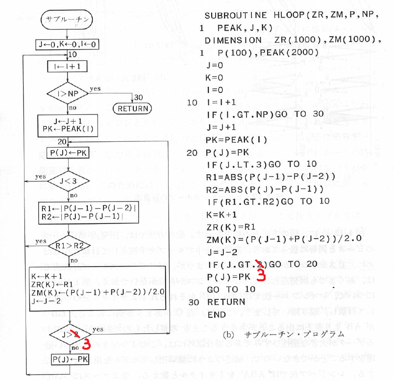

レインフロー法と実質同等な評価結果を与えるヒステリシスループ波形計数法が文献[1]に記載されています。ここに記載されているヒステリシスループ法のアルゴリズムは、実質レインフロー法の評価結果と同じ結果を与えますが、厳密に見ると少しだけ異なっていました。しかし、ヒステリシスループ法のアルゴリズムを一か所変更するだけで、完全にレインフロー法と合致することを最近見出しました。ここで、提供するアルゴリズムは完全にレインフロー法に合致するはずです。
下図の赤線部で変更点を示します。

これにて、完全にレインフロー法と一致すると考えていますが、不都合がありましたらメール連絡下さい。なお、当サイトから提供する波形計数システムのうち、この対応を行っているのは、Python版のみです。Windows版とR版は修正していませんので、注意して下さい。(2021.9.23)